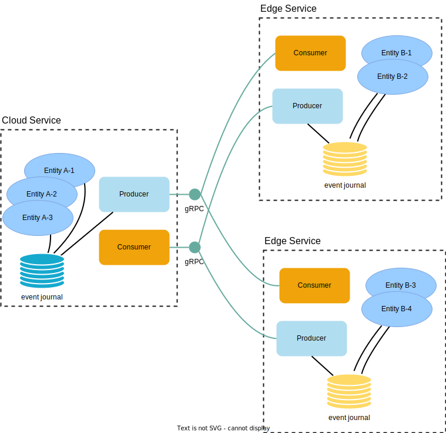

Akka Edge
Akka Edge is a set of features in Akka that will help you with using Akka at the edge of the cloud for higher availability and lower latency.

Akka Edge is similar to Akka Distributed Cluster and they share features and implementation, but Akka Edge is intended for use cases with even more geographically distributed services and possibly in more resource constrained environments. In contrast, Akka Distributed Cluster is intended for connecting rather few services in different cloud regions. Akka Edge and Akka Distributed Cluster are designed to be used together.
.